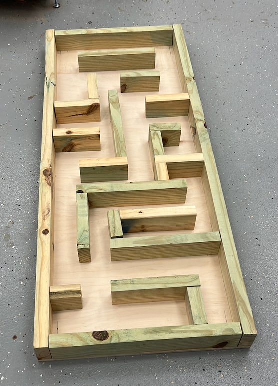
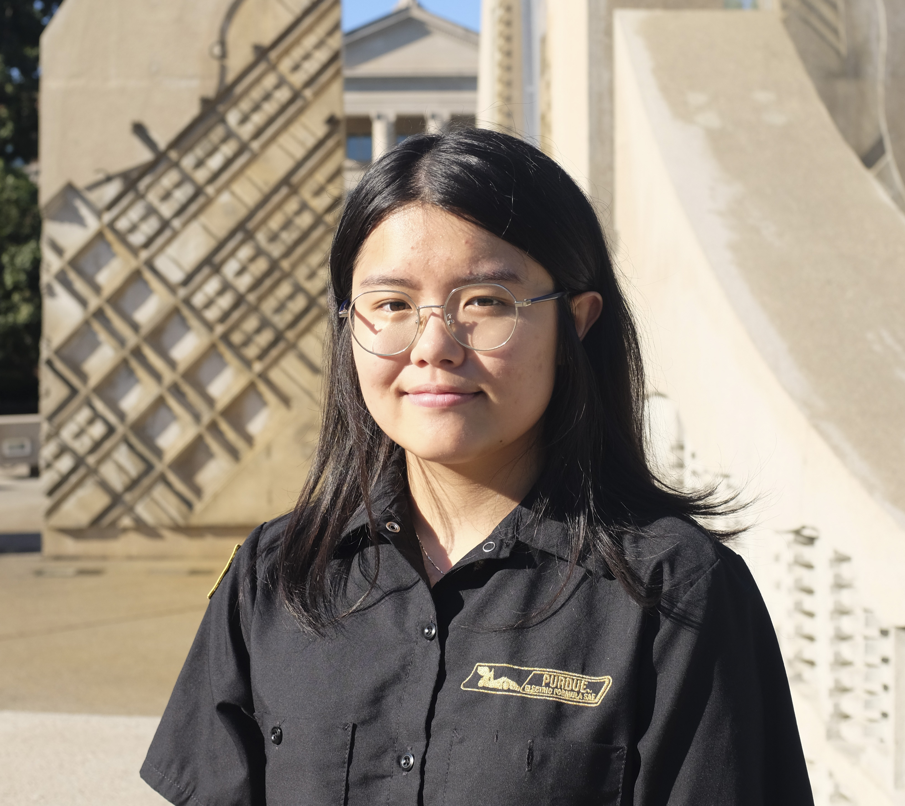
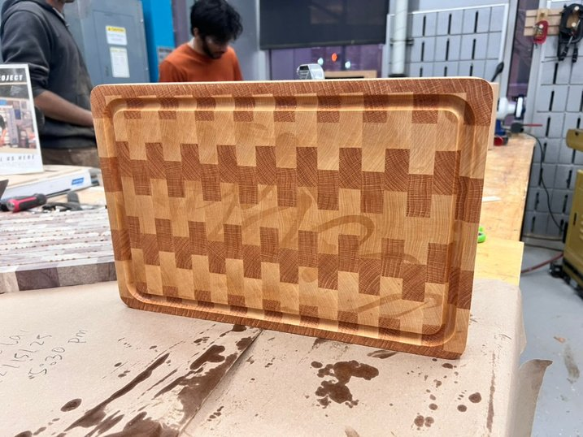
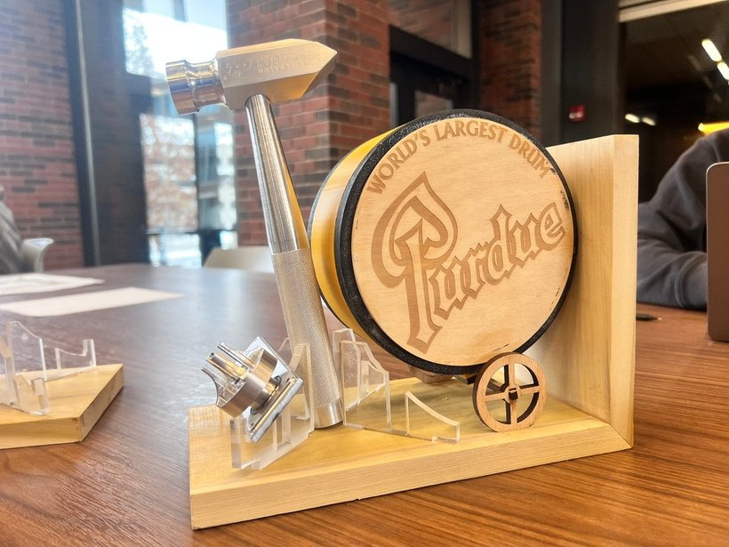
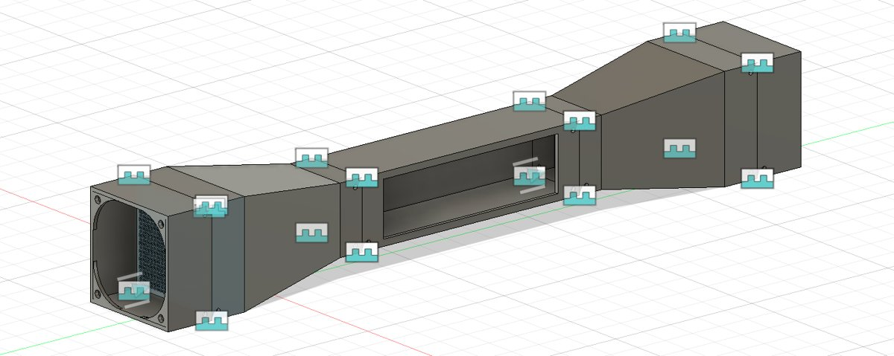

Misc. Testing Equipment
Designing and building custom testing equipment for robotics research, from CAD model to finished build.
hi [at] jolielai [dot] com
I am a Mechanical Engineering student at Purdue University, graduating in May 2028.
I currently research computational design and simulation for robots at the Computational Motion, Manipulation, and Autonomy (CoMMA) Lab, advised by Dr. Zachary Kingston.
I am broadly interested in robotics, mechanical design, and manufacturing.


Designing and building custom testing equipment for robotics research, from CAD model to finished build.

End grain cutting boards built from rough stock, with a juice groove routed on a CNC gantry.

A Purdue Big Bass Drum desk organizer that doubles as a hammer stand and clock housing, with a custom latching mechanism.

A 3D-printed tabletop wind tunnel prototype designed for better airflow quality and accuracy than a commercial product, validated with CFD.